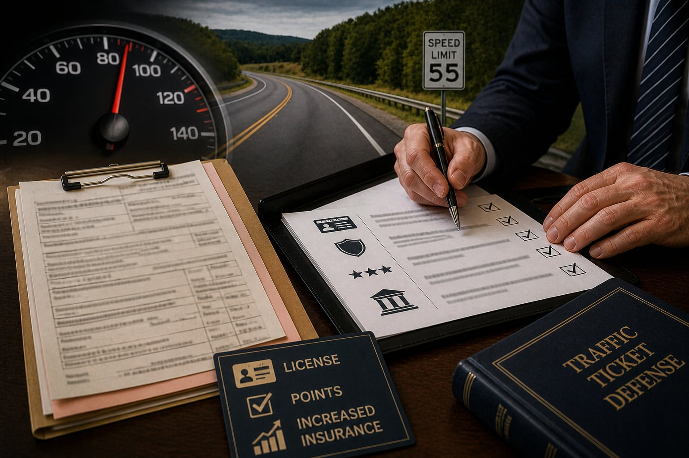

When a response date is close
Call with the citation, hearing notice, plea status and any PennDOT letter.
680 Wolf Avenue, Easton, PA 18042
610-258-3757Traffic tickets and summary appeals
A traffic citation may look minor, but it can affect points, license status, insurance, CDL concerns, employment driving and later court steps. Start with the ticket, plea instructions, hearing notice and any PennDOT mail.
What to do now
The paper should identify the charge, court, response option, date and issuing officer or agency.
Call with the citation, hearing notice, plea status and any PennDOT letter.
Identify prior tickets, points, suspensions, CDL status and whether driving affects work.
If a guilty plea, conviction or final order already happened, the next date must be checked from the actual record.
A traffic case may involve both the court response and later PennDOT consequences.
Traffic citation preparation
Traffic matters can involve speeding, traffic-control violations, accidents, driving under suspension, careless or reckless driving, insurance issues, registration problems, CDL issues and other summary offenses. The right first step depends on what the citation says and what has already been filed, pled or decided.
Summary appeal questions often arise after a plea, conviction or magisterial district court decision. The timing and filing step should be checked against the court papers and current rules rather than memory.
SVMB Law helps drivers in Easton, Northampton County, Lehigh County and the Lehigh Valley organize traffic citations, PennDOT mail, driving records and court notices so the next step can be reviewed.
Court and PennDOT overlap
A citation is usually the court paper. A PennDOT letter may arrive separately and may address points, suspension, restoration or other driver-status issues.
Bring the ticket, hearing notice, proof of insurance or registration if relevant, accident information and any correspondence from the court or PennDOT.

Bring the full citation, including statute section, charge, location, date, officer, court and response instructions.
Identify whether you have already pled guilty, requested a hearing, missed a date or received a decision.
If a decision has already been entered, bring the judgment, filing date and any notice about appeal rights or payment.
Bring PennDOT notices, restoration letters, point information and current license-status records.
Tell the office if driving is required for work, CDL, caregiving, school, medical care or transportation.
If the ticket came from a crash, preserve photos, insurance information, report numbers and witness names.
Related traffic and license guides
Use these related pages when a citation is connected to PennDOT, DUI or broader criminal concerns.
DUI, citations, summary traffic and PennDOT preparation.
Open DUI and trafficSuspension, restoration and driver-status record questions.
Open license guideARD questions after DUI or other criminal charges.
Open ARD guideLast updated
Last reviewed May 2026. This page is general information, not legal advice for a specific situation. If a paper lists a date or required action, use that paper as the starting point when you call.